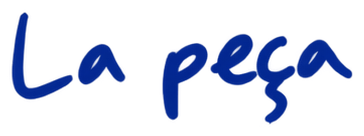
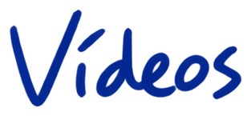

Teaser
Una primera entrada a l’univers de Los lunares del Puma.
1 min 25 s · Subtítols en català
Dansa · so · assaig performatiu
Què passa quan el zapateado flamenc es desplega des de l’horitzontalitat i la inversió?
Hip-hop · flamenc · dansa contemporània · Performance
Continua baixant ↓
Los lunares del Puma neix de l’escolta: Adrián Vega atén el seu propi so, explora les seves cadències i reconeix en el seu cos un patrimoni intercultural nascut de l’encreuament entre el hip-hop i el folklore.
La peça pren com a eix el zapateado flamenc, treballat com a matèria rítmica i poètica que es mimetitza amb la corporalitat del breaking i s’expandeix cap a les textures de la dansa contemporània. El zapateado es desplega en horitzontal, en caiguda i en inversió. Des d’aquest territori, la peça assaja una resposta a quant de flamenc habita en el cos de Vega i com acostar-se a aquesta tradició sense entrar en l’estereotip.
En aquesta fricció amable apareixen residus, marques i empremtes que configuren una presència escènica singular: el Puma. Una figura que anomena la diferència i proposa una manera de situar-se quan la resposta no és «soc flamenc», sinó «soc un Puma».
Els lunares són l’hàbitat d’aquesta figura. També són taques. També poden ser finestres des d’on mirar, activar i reproduir memòries del moviment. Ritme, compàs i pols configuren un paisatge sonor i visual que revela l’empremta del gest i la intensitat de la seva vibració.
Amb aquesta peça, Adrián Vega proposa una experiència propera i visceral dins de la seva investigació sobre les danses d’anada i tornada: una trobada entre la memòria del cos i la vibració del present.


Un espai per escoltar.
Los lunares del Puma ens proposa una experiència voyeur on qualsevol espai es pot transformar en la sala d’assaig de l’artista. El compàs i el ritme són els elements més destacats de la peça, a més d’explorar el cos humà i les seves textures a partir de la sonoritat de l’espai per on es mou.
Avui ser streamer és una cosa habitual, la nostra relació amb les càmeres pertany a la quotidianitat i compartir les nostres activitats i processos s’ha convertit en un hàbit. Adrián Vega aprofita la proximitat de les eines digitals per explorar el format de videoblog performatiu, on el virtual i el presencial convergeixen per estimular la curiositat i aprofundir en la idea del procés creatiu com un resultat artístic en si mateix.

«Los lunares del Puma neix del procés d’escoltar-me a mi mateix, d’atendre el meu so, d’entendre la interculturalitat, el patrimoni corporal i sonor que he generat gràcies a la trobada amb la dansa. Els lunares són un hàbitat, són una finestra per on mirar. El puma és la meva adolescència, accedir als codis del Hip Hop i comprendre’ls. També és la meva postadolescència, que em brinda una perspectiva contemporània des d’on puc observar, conviure i deixar que el puma miri i es relacioni amb els flamencs.»Adrián Vega

Una primera entrada a l’univers de Los lunares del Puma.
1 min 25 s · Subtítols en catalàVersió site specific de Los lunares del Puma.
26 min 39 s · Subtítols en catalàRegistre de la peça a Escena Xixón.
43 min 51 s · Subtítols en catalàUn espai de transmissió: compartir la investigació corporal de la peça a través d’un workshop.
Workshop · Transmissió · 1 min 33 s
Em dic Adrián Vega, soc un coreògraf graduat a l’Institut del Teatre i professor visitant al conservatori professional de dansa de Barcelona. Em considero un artista post-Hip Hop i el meu interès i la meva pràctica coreogràfica es basen en la hibridació, l’especulació sobre llenguatges de moviment i el treball de terra.
Actualment, gràcies a la meva connexió amb el flamenc i la música, estic particularment interessat en la sonoritat del cos i en com es pot utilitzar en la dansa i la creació contemporània. El 2013, em vaig submergir en les arts escèniques com a cofundador del col·lectiu Iron Skulls Co, on vam explorar les relacions entre les danses urbanes, la dansa contemporània i la teatralitat, desenvolupant una manera de fer que anomenem «theatrical breakin’». Les meves propostes han estat seleccionades per a diversos festivals internacionals, com Breakin’ Convention a Londres, Summer Dance Forever a Amsterdam, Summer Stage a Nova York i Hip Hop International a San Francisco.
Actualment, juntament amb Marina Pravkina a la plataforma Jazzbetween i amb Juan Carlos Llérida a Postablao i Doce, he treballat al laboratori d’investigació empírica del flamenc, una mirada al flamenc a través de l’experiència que ajuda a expandir la nostra comprensió del folklore.
Els esdeveniments del 2020 van fer canviar la meva visió artística, i vaig començar a explorar temes autobiogràfics, flamenc invertit i post-Hip Hop. A la meva primera peça, «We are just okey», la idea de caure em va portar a treballar el zapateado des de la inversió i en silenci total, per entendre el so de l’impacte des de la caiguda. Aquí va sorgir el meu interès per la performativitat, la quotidianitat i l’estètica brutalista. La meva segona creació és una coproducció entre ICUB i Mercat de les Flors amb el programa de residència. La peça es diu «Título provisional» i se centra en la motivació intrínseca de la preadolescència en un videoblog performatiu.
El 2022, em vaig convertir en resident a La Caldera, on vaig trobar una gran llibertat poètica. Tot el que he treballat abans m’ha nodrit per dur a terme el projecte «Los lunares del Puma», on creo un solo llarg, una instal·lació i dos tallers centrats en el procés creatiu en lloc del resultat, i on puc parlar de la meva relació amb les càmeres, la sonoritat del cos i l’apropiació cultural.
Un solo que pot habitar espais diferents.
ContacteMirades que acompanyen la peça i la seva investigació.
Adrián comparteix l’origen de Los lunares del Puma i la trobada entre hip hop, flamenc i zapateado en horitzontal.
El Festival Essencia presenta la peça i una investigació que travessa el terra, la inversió i el so.
Flamenco invertido a Espai LaGranja: un taller per compartir la investigació entre danses urbanes i flamenc.
Un reportatge sobre Espai LaGranja que inclou el workshop Flamenco invertido entre les seves propostes. Pàgina 4.
Los lunares del Puma forma part del recorregut de Dansa Metropolitana 2023 a La Caldera.
La presentació de Los lunares del Puma a Cué, Llanes, dins del cicle R.A.R.U R.A.R.A.